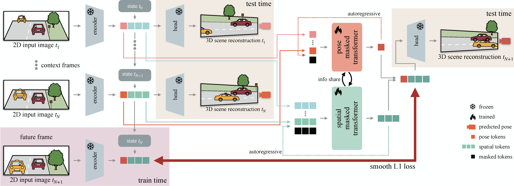

Motivation

Forecasting the evolution of dynamic environments is crucial for autonomous agents. While generative world models have recently achieved high photorealism in 2D video synthesis, by mixing within the image plane ego-motion and environmental dynamics, they exhibit physical inconsistencies, such as morphing or vanishing objects, especially over long time horizons. In this paper, we propose FR3D, a world model that predicts a persistent 3D latent representation for future dynamic 3D reconstruction.
Method

Unlike prior works that treat the world as a sequence of image-based features, FR3D explicitly decouples the 3D evolution of the scene from the agent's trajectory, treating the inferred ego-motion as a latent proxy for action. This disentanglement resolves the ambiguities between self-motion and world-motion, ensuring geometric consistency into the future. Furthermore, we introduce a teacher-student distillation strategy that leverages the spatial "common sense" of off-the-shelf foundation models, leading to robust zero-shot generalization. Extensive experiments demonstrate FR3D's strong performance for future dynamic 3D reconstruction from monocular observations across multiple datasets, even 2 seconds into the future.
Results

With FR3D, we introduce the task of future dynamic 3D reconstruction from monocular observations, leading to a new paradigm for 3D world models. We show that disentangling ego-motion from environmental dynamics enables significantly more stable long-horizon predictions, even 2 seconds ahead. Remarkably, the proposed FR3D achieves strong zero-shot performance by learning how to operate on the latent space of a pre-trained, feed-forward 3D reconstruction model. The figure above shows qualitative zero-shot results of FR3D on the nuScenes and KITTI dataset, with two different challenging dynamic scenes for each dataset. Significant domain shifts occur between Waymo (where FR3D forecasting model is trained on) and the two datasets here. For example, the aspect ratio of the KITTI inputs is significantly wider than that of Waymo (see figure at the top of the project page). Yet, all scenes show remarkable forecasting performance by FR3D, closely matching its oracle model. The scene at the top left depicts a particularly interesting scenario, where a white car is performing a right turn, while the ego vehicle is turning left onto the same street. FR3D successfully forecasts the ego-motion and the trajectory of the other traffic participant, despite being conditioned only on 4 context images. This shows the benefits of our disentanglement between ego-motion and world-motion, with our model handling the challenging motions independently. The effectiveness of this strategy is also visible in the Waymo scene at the top of our project page, with traffic plausibly forecasted to head in opposite directions and at different speeds. In our ICML paper, we demonstrate the effectiveness of FR3D for short-, mid-, and long-term horizons. Throughout extensive experiments on the Waymo, nuScenes and KITTI datasets, FR3D significantly outperforms all of our baseline models for future 3D reconstruction (i.e. forecasting camera pose and depth).